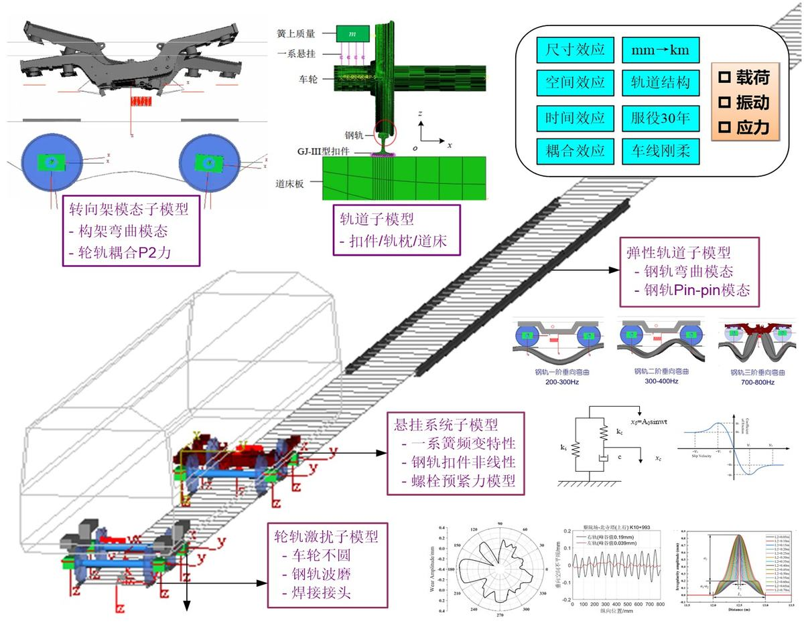
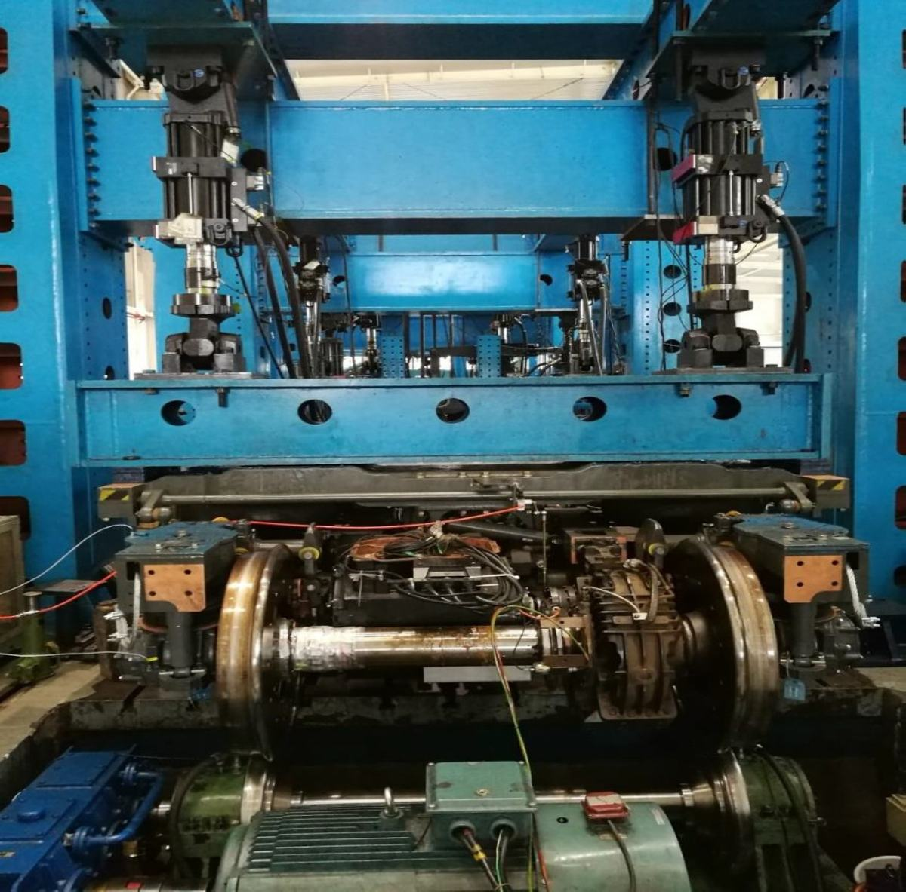
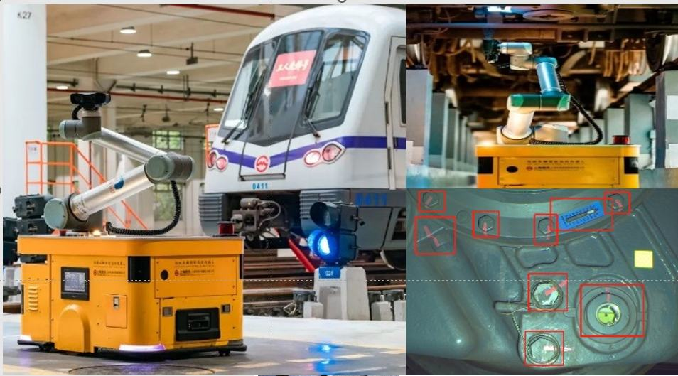

十四五期间，我国自动驾驶城市轨道交通线路新增运营里程达2259km(超英日法德总里程)，是我国轨道交通智能技术从“追赶”到“领跑”的重要跨越。自动驾驶模式下，列车每日营运结束后自动退出至车辆基地夜间“无人区”休眠，列车走行部作为承载、牵引、制动、导向的最核心部件，面临次日服役安全的判定问题，但走行部安全态势的无人化检测技术国内外尚未突破，主要面临机器监检下安全评价缺方法、多源海量数据中细微故障难追踪、整体安全态势难决策的三大挑战。
项目组经过13年“产学研用”联合攻关，全方位开展了基础理论、核心技术、核心器件、成套装备等创新研究，取得原创性成果。
1)提出走行部无人监检环境下的安全态势演化理论及特征指标体系。首创面向机器监检的多体耦合动力作用下走行部安全态势演化理论，揭示轮轨力交变-大蠕滑作用-不圆度激振-模态应力-部件微裂纹的演进规律，设计行业首套走行部高频强振动服役环境再现的结构安全验证平台，填补轨道交通走行部安全态势无人化检测的技术空白。
2)研发走行部微观故障“感-算-判”自主追踪检测技术。提出走行部异常数据挖掘算法，设计显性特征动态关联的走行部安全态势数据(≮1.26PB/月·线)采集、分析及联动系统，实现走行部安全态势“感知-计算-判断”闭环的全周期精确追踪，故障溯源准确度达98.43%，故障综合误报率小于2.3%，漏报率小于1.2%。
3)研发走行部安全态势的高精高效成套检测装备。创新设计光声并列的高阶多边形与微裂纹一体化传感模组，尺寸为传统串列模组的1/12，研制“巡检-探伤”多功能追踪检测机器人，车轮不圆度检测精度达0.05mm(优于全球最高0.1mm)，实现走行部故障综合检出率98%；研建增量式宽度学习的走行部安全态势决策与运维平台，实现走行部百万公里故障发生率同比下降46.9%。
授权发明专利27项、软件著作权13项、专著2部、国标/行标/团标等6项、SCI论文16篇。获2023年度湖北省科技进步一等奖、国家优质工程奖4项。成果通过IRIS(国际铁路行业标准)和CE(欧盟)认证，已在北京、上海、广州、深圳等20余座城市应用，市场占有率超62%，支撑我国轨道交通智能检测技术体系创新，近二年新增销售额9.08亿元。徐青、谭建荣、毛明3位院士在内的鉴定委员会一致认为项目成果整体达到国际先进水平，其中列车走行部表面状态自主追踪检测技术达到国际领先水平。
智慧城轨是交通强国建设的主战场，智慧车辆基地是智慧城轨的核心支撑，自动驾驶是智慧车辆基地的核心技术，随着我国数字化时代全面推进，城轨交通从重建设转变为建设、运营并重。国务院《新一代人工智能发展规划》（国发〔2017〕35号）明确指出：重点突破轨道交通自动驾驶智能技术，《智慧城轨发展纲要》提出：数字转型、智慧赋能，推进智慧城市轨道交通建设。
十四五期间，我国自动驾驶城市轨道交通线路新增运营里程达2259km（超英日法德总里程），是我国城市轨道交通智能技术从“追赶”到“领跑”的重要跨越。自动驾驶模式下，列车每日营运结束后自动退出至车辆基地夜间“无人区”休眠，列车走行部作为承载、牵引、制动、导向的最核心部件，面临次日服役安全的判定问题，但走行部安全态势的无人化检测技术国内外尚未突破，主要面临机器监检下安全评价缺方法、多源海量数据中细微故障难追踪、整体安全态势难决策的三大挑战，存在三大技术难题：
（1）安全态势“测什么”难题：走行部是由1600余个零部件通过螺纹、键、铆、焊等方式组合而成的复杂结构，长期服役下零部件性能退化，故障诱发因素增多，如何智能决定何时、何地、通过何种方式测取何类数据，并通过何种方法判定其安全态势是项目面临的首要难题。
（2）故障数据“在哪里”难题：异构分布式协同检测产生的海量异构、具有强时空动态性的感知数据, 如何高效建立时空数据索引、查询、清洗、挖掘，精准辨识多源海量监检数据中的故障显性指标，是走行部微观故障自主追踪必须解决的难题。
（3）安全态势“快判、准判”难题：走行部每日夜间大批量停放至无人区，有限检测天窗（2-4h）下，如何高效自主协同多机器人完成多随机任务的精准检测，并快速利用各任务反馈的多源异常数据数据实现走行部整体安全态势超前预测与健康度定量评价是难题。
项目以企业为创新主体，产、学、研、用相结合，跨学科、多单位联合攻关，按照基础理论研究、复杂技术攻关、高端装备研发及行业示范应用的技术路线展开研究，提出了走行部无人监检环境下的安全态势演化理论及特征指标体系，研发了走行部微观故障“感-算-判”自主追踪检测技术，研制了走行部安全态势的高精高效成套检测装备与协同决策平台，实现了走行部智能检测的重大创新。项目的总体技术路线如图1。
图1 课题技术路线
科技创新一：提出面向机器监检的多体耦合动力作用下走行部安全态势演化理论，揭示了轮轨力交变-大蠕滑作用-不圆度激振-模态应力-部件微裂纹的演进规律；构建轮轨间多频率切向蠕滑与车轮周向磨耗长效迭代的走行部全要素仿真模型，研发高阶不圆度激励与振动模态的部件安全态势阶梯式累计算法，解决走行部结构损伤的量化评估难题，实现机器监检下走行部服役安全态势定量评价；研建高频强振动服役环境再现的行业首套走行部结构安全验证平台，攻克全服役周期故障演变态势的难题，全面揭示车轮不圆度与部件微观故障的定量映射关系，建立了走行部安全态势机器检测特征指标与技术体系，应用于29座（占全国46%）自动化车辆基地，填补了轨道交通走行部安全态势无人化检测的技术空白。【学科：082301铁路运输工程、080201机械工程；发明专利:一种极坐标系下的车辆动力学仿真方法ZL201910911961.0、一种测力轮对标定试验台ZL202110769075.6等5项；主要论文:《Dynamic stress analysis of a metro bogie due to wheel out-of-roundness based on multibody dynamics algorithm》、《Fatigue stress estimation of metro bogie frame through frequency response functions by using limited sensors》等6篇SCI；专著:《铁道车辆系统动力学及应用》、《城市轨道交通车辆基地设计实践与创新》；国家/行业标准:《轻轨交通设计标准》等6部】
关键技术一：提出面向机器监检的多体耦合动力作用下安全态势演化理论
走行部在长期服役过程中面临轮轨高频冲击、交变载荷作用和结构弹性振动，导致零部件松动、裂纹、失效等损伤的复杂故障特征，必须全面揭示走行部安全态势演进规律，奠定机器监检特征指标的基础。
项目综合尺寸、空间、时间、刚柔效应下振动-载荷-应力的相互作用关系，发展了车-线、轮-轨和刚-柔耦合的大系统动力学分析方法，攻克多体耦合动力作用下走行部安全态势演化理论（图2），突破铁道车辆动力学与结构疲劳独立研究的局限。探明多频率轮轨耦合振动下法向力的交变行为，揭示小半径曲线和频繁牵引制动下轮轨大蠕滑作用对车轮不圆的影响机理，厘清不圆度激励-悬挂频变特性-部件模态应力的传递路径，进而揭示模态应力和原始焊接缺陷共同作用下部件微裂纹的长期服役演化规律（见图3）。
关键技术二：攻克走行部结构损伤的量化评估难题，实现机器监检下服役安全态势定量评判
构建轮轨间多频率耦合振动下切向蠕滑与车轮周向磨耗长效迭代模型（见图4），掌握轨道、车速、线路等要因对车轮不圆发展的竞争机制，揭示车轮不圆阶次、幅值和相位的形成机理（见图5）。研发高阶不圆度激励与振动模态的部件阶梯式累计算法，攻克长期服役下车轮不圆度周期性退化对关键部件损伤程度量化评估难题（见图6），突破准静态加载方法和忽略轮轨动态激励的瓶颈，实现机器监检下服役安全态势定量评判。
关键技术三：构建走行部无人监检环境下安全态势的特征指标体系
研制行业首套多阶次、变幅值与多相位车轮不圆激励下走行部结构安全试验平台（见图7），克服液压激振频率低的缺点，精准模拟悬挂系统非线性动态特性，实现高频强振动服役环境再现和全要素仿真试验验证；结合焊接接头SN曲线和应力载荷谱，揭示全服役周期内轮轨力、车轮不圆度、部件振动特征、模态应力与微观故障的定量映射关系（见图8），构建基于走行部载荷-应变-振动-位移的多维机器检测特征指标，提出“车载监测-动态快筛-停车精检”多机融合的无人化检测技术体系（见图9），应用于全国46%的自动化车辆基地，形成专利、专著、标准等完全自主的系列技术成果，填补了轨道交通走行部安全态势无人化检测的技术空白。
科技创新二：研发了走行部微观故障“感-算-判”自主追踪检测技术。发明相空间循环重构的走行部最小可检修部件追踪定位技术，定位精度≤0.3mm，攻克多周期混沌序列监检数据时空融合的难题，实现了无人区内走行部安全态势数据的全域感知；构建零部件连接关系约束的走行部溯源图序列模型，提出基于注意力机制与典型相关分析的异常数据挖掘算法，解决高密数据下走行部微观故障显性特征的毫秒级精准获取难题，优于国内外同类技术；研建显性特征动态关联的走行部安全态势数据采集、分析及联动系统，发明车辆自动检修架构下的走行部微观故障决策边界自适应判定技术，实现了走行部微观故障“感知-计算-判断”闭环的全周期精确追踪，故障溯源准确度达98.43%，故障综合误报率小于2.3%，漏报率小于1.2%，突破了走行部最小可检修部件自主追踪检测的瓶颈。【学科：082301铁路运输工程、080201机械工程；发明专利：巡检机器人定位检修部件的方法及系统ZL202011499197.X、一种城市轨道交通车辆自动检修系统及方法ZL201910245621.9等6项；软件著作权：《城轨车辆综合诊断系统数据分析平台》2022SR0184876等5篇；主要论文：《Fault Detection of Bearing by Resnet Classifier with Model-Based Data Augmentation》、《Observer-based friction force estimation for brake system under low-frequency vibration》等5篇SCI】
关键技术一：发明多周期监检数据下走行部最小可检修部件追踪定位技术
走行部运行和检测过程中每天将产生海量多源多维异构数据，且分散存储在车载数据存储单元以及轨旁多机检测设备系统中，难以准确快速提取、深度融合分析，给走行部检修部件安全状态精准感知带来巨大挑战。
提出走行部系统相矢量序列建模方法（见图10），发明多周期混沌序列监检数据的相空间循环重构技术，攻克了“车载监测+轨旁多机检测”无人化检测工艺下走行部最小可检修部件追踪定位的难题（见图11），定位精度≤0.3mm，建立监测数据与检测数据的相关性映射图谱，解决了车载监测时域信号、轨旁检测图像信号及数值化指标交叉融合的难题（见图12），实现了走行部安全态势PB级监检数据的时空统一。
关键技术二：高密数据下走行部微观故障显性特征的毫秒级精准获取技术
走行部具有多遮挡复杂情景下零部件极大相似的高密弱特征数据，呈强非线性，如何对走行部异常数据进行快速与准确的微观故障甄别，是实现走行部高精高效无人化检测的关键。
构建以时间为状态量、走行部零部件为节点、零部件之间的连接关系为边的故障溯源图序列模型，攻克时变溯源图序列下最小可检修部件特征序列的抽取难题（见图13）；提出基于注意力机制与典型相关分析的异常数据挖掘算法，精准定位微观故障所在节点（见图14），解决了高密数据下走行部微观故障的显性指标毫秒级精准获取难题（见图15），实现最小可检修部件平均检测时间小于0.35s，优于国内外同类技术。
关键技术三：走行部安全态势“感知-计算-判断”闭环的全周期精确追踪技术
走行部全生命周期内最小可检修部件的微观故障在时间、环境、维修等因素影响下总体呈锯齿状上升趋势，如何融合历史和当前的监检数据对微观故障进行追踪，是走行部安全态势精准判断的首要任务。
提出显性动态特征关联的走行部最小可检修部件故障追踪算法（见图16），研建走行部安全态势数据采集、分析及联动系统；针对时变条件下运行环境变化导致的故障诊断决策边界漂移的现象，发明车辆自动检修架构下的走行部微观故障决策边界自适应判定技术，攻克了走行部微观故障演变权值因子的高效计算难题；基于走行部全域数据的时域变化和关联多目标动态特征，预测最小可检修部件故障变化趋势，较传统方法平均绝对误差、均方根误差分别下降21.87%和32.72%，实现了走行部安全态势“感知-计算-判断”闭环的全周期精确追踪（见图17-18），故障溯源准确度达98.43%，故障综合误报率小于2.3%，漏报率小于1.2%，突破了走行部最小可检修部件自主追踪检测的瓶颈。
科技创新三：研制了走行部安全态势的高精高效成套检测装备与协同决策平台。研发光声并列的高阶多边形与微裂纹一体化传感模组，尺寸为传统串列模组的1/12，发明轮轨接触力自回归移动平均的车轮品质判断技术，实现车轮不圆度检测精度达0.05mm（优于全球最高0.1mm），研制“巡检-探伤”多功能追踪检测机器人，实现走行部微观故障综合检出率98%；提出基于有限状态机的多随机任务智能分配及调度算法，攻克无人区监检数据融合计算驱动下的机器人集群高效自主协同难题，较传统集中调度效率提升超27%；研建增量式宽度学习的走行部安全态势决策与运维平台，发明多源多模态数据模糊聚类的故障风险推理和维修决策技术，实现了走行部故障超前预测与健康度定量评价，支撑走行部运维从故障修向预防修转变，走行部百万公里故障发生率同比下降46.9%（0.32‰到0.17‰），完成轨道交通走行部全球首套智能检测与运维系统在广州投用，推广至国内外20余座城市，市场占有率超62%。【学科：080201机械工程、081203计算机应用技术；发明专利：轨旁多功能探伤集群装置及其控制方法ZL202310384272.5、列车轮对在线探伤用超声波探头模组结构、ZL201511028287.X、一种基于有限状态机的列检机器人分布式调度方法ZL202310603456.6、轨道交通车辆多源多模态的故障风险推理和维修决策方法ZL202310445412.5等16项；软著：《城轨车辆综合诊断系统数据应用平台》2021SR0184869等8篇；主要论文：《Development of dual-arm mobile robot platform based on ROS》等5篇SCI】
关键技术一：走行部安全态势高精高效成套智能检测装备
列车每日营运结束后自动退出至车辆基地夜间“无人区”休眠后，夜间检测天窗（2-4h）极为受限，传统单源串联检测技术无法满足无人区大批量复杂结构走行部安全态势的快速精准感知需求。
研制“激光-超声”并行驱动的一体化传感模组（长0.46m，宽0.1m），尺寸仅为传统串联模组（布置区域：长5.5m，宽1.3m）的1/12（见图19），发明轮轨接触力自回归移动平均的车轮不圆度检测技术，检测精度达0.05mm（优于全球最高0.1mm），解决了车轮高阶多边形的精准检测难题，研发微动异物吹扫与可变位隔离装置，解决了光声融合检测多物理场（光-液-声）相互干扰的难题，实现了走行部多参量移动式同步检测；研制在线监测模组、轨旁360°智能检测系统、巡检机器人、探伤机器人等走行部成套智能检测装备（见图20-22），实现对走行部内部损伤到外部劣化的全过程追踪检测。
关键技术二：“巡检-探伤”多功能追踪检测机器人集群高效自主协同技术
机器监检面临短天窗（2～4h）、多作业项点（72万个/日）、多任务随机性等挑战，传统机器人存在问题建模难、求解复杂度高、方案适应性差等缺点，“在线监测+轨旁多机检测”下多机高效协同是关键所在。
提出“快筛-精检”在线异常预警驱动的检测机器人任务调配检测工艺，建立分布式流言信息聚合模型（见图23），解决异常检测数据的快速传播和精检任务在线生成的难题；构建邻接代理决策协商的多随机任务动态分配模型，提出多目标函数加权编码的任务代价优化算法，通过任务冲突解决、交换和转移机制动态优化检测项点的分配方案，攻克无人区监检数据融合计算驱动下的机器人集群高效自主协同难题（见图24），相比传统集中调度手段效率提高约27%；发明基于有限状态机的“巡检-探伤”多功能追踪检测机器人分布式调度系统（见图25），实现“在线监测+轨旁多机检测”下多机高效协同完成多作业项点的无人化检测。
关键技术三：走行部安全态势决策与运维平台构建
构建走行部微观故障自主追踪检测、维修历程、线路、环境等多源多模态数据融合模型，提出基于模糊C-均值聚类（FCM）的走行部故障风险推理算法（见图26），攻克故障识别效率、运行可靠性、维修经济性等多目标耦合下走行部维修决策难题，实现走行部故障的超前预测；集成走行部在线监测及轨旁多机检测的海量有效监检数据，研发最小可检修部件异常数据增量式宽度学习算法，攻克走行部健康定量评价的难题，研制走行部安全态势决策与运维平台（见图27），支撑走行部运维从故障修向预防修转变，走行部百万公里故障发生率同比下降46.9%，完成轨道交通列车走行部全球首套智能检测与运维系统在广州投用，全方位降低检测、维修成本，推广应用至国内外20余座城市，市场占有率超62%，推动轨道交通运营“降本、增效”，效益显著。
安全运维案例：2019年6月，全球首套无人化智能检测系统在广州地铁投用（见图28），采用智能巡检机器人代替人工列检作业；利用走行部安全状态决策平台实时监测列车走行部运行状态，主动控制车轮镟修周期，管控车轮多边形限值，车轮镟修作业量同比下降26%，轮对平均寿命提高32%，全年列车故障扣修共计32列·次，相比2018年67列·次减少约52%，列车健康度和整体上线率明显提升。经长达16个月运维保障，2020年10月，广州地铁评定列车运行品质表现稳定，先后发布《广州地铁B6型电动车组八日检规程》以及《基于TPDS系统的轮对镟修管理办法》2部企业标准（见图29），实现了检修模式重大变革，大幅减少了人力成本和检修成本，技术和经济效益显著。
项目成果构建了适应自动驾驶列车在无人监检环境下走行部服役安全状态保障体系，相关技术与国内外同类技术先进性对比如下。

